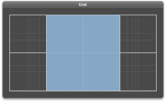

| Step 2: Rearrange your windows | |||
|
With the window to move and resize frontmost call Grid's panel with your keyboard shortcut.  The colored area shows which fraction of the screen your window will occupy after moving and resizing. Now use the keyboard to set the new position and size of the window:
If you have multiple monitors, you can switch between them with Command-Tilde and Command-Shift-Tilde (same as to switch between windows in any app). On a German or French keyboard use Command-< and Command-Shift-<. Happy gridding! |